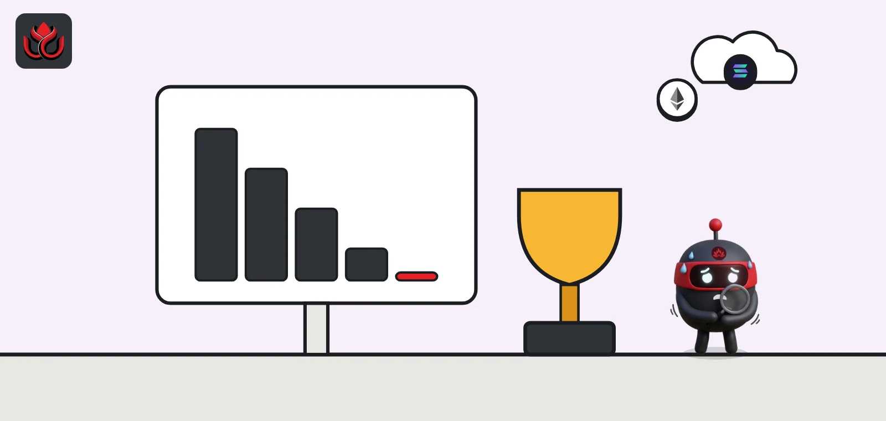
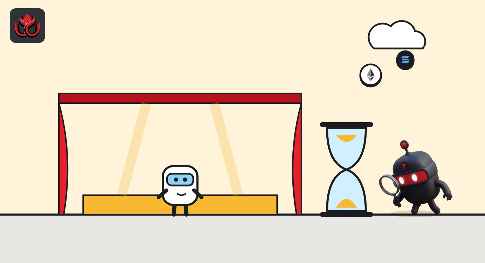
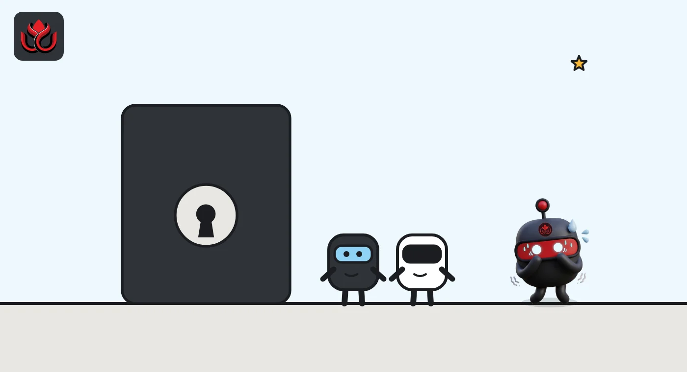

Bored Apes are down 96% from their record. Which NFT blue chip fell least?
Most of the famous NFT collections now sit about 90% to 99% below their peak floor prices in ETH, and the marketplaces are closing. CryptoPunks are the exception, at about 76% down.

Key points
- Bored Apes had a floor of 5.88 ETH on November 2, 2026, about 96% below their 153.7 ETH record from May 2022, CoinGecko shows.
- CryptoPunks held up best of the eight collections checked, about 76% below their 125 ETH peak. Most others are 97% to 99% down.
- Blur's website shuts on November 12, 2026, and Nifty Gateway closed in February, but holders can still move or sell NFTs through other apps.
How far the blue chips fell
The NFT collections that defined the 2021 and 2022 boom have lost almost all of their value. LC Insight checked floor prices for eight well-known Ethereum collections on CoinGecko on November 2, 2026, and seven were about 90% or more below their record in ETH. The floor is the cheapest price at which any item in a collection is listed for sale.
The Bored Ape Yacht Club floor stood at 5.88 ETH, about $13,569. Its record was 153.7 ETH on May 1, 2022, so it is about 96% down in ETH terms. Mutant Apes, Azuki, Moonbirds and Doodles are all 97% to 99% below their peaks.
CryptoPunks were the strongest. Their floor was 30.41 ETH, about $70,192, down about 76% from 125 ETH on August 29, 2021. Milady Maker, at 0.77 ETH against a 7.35 ETH record from December 2024, was the next best at about 90% down.
How far below their record floor, November 2, 2026
% below record (ETH)
Source: CoinGecko NFT data, checked November 2, 2026
Thin trading
Low prices come with low activity. In the 24 hours to our check, CoinGecko showed only four Bored Ape sales, worth 23.27 ETH in total. Milady Maker recorded two sales worth 1.38 ETH, Moonbirds three sales worth 1.77 ETH and Doodles six sales worth 1.61 ETH.
A few collections were busier. Mutant Apes had 31 sales worth 34.95 ETH and Pudgy Penguins 15 sales worth 36.39 ETH. CryptoPunks traded 77.40 ETH, the most of the eight.
The total value of the group is small next to its past. CoinGecko put the market cap of CryptoPunks, the floor price times the number of items, at about $701 million, and Bored Apes at about $136 million. Doodles was worth about $6.2 million on the same measure.

The marketplaces are closing
Trading venues have been closing:
- Nifty Gateway, owned by Gemini, went into withdrawal-only mode on January 23, 2026, and closed on February 23, 2026, Gemini said. Gemini said it would keep supporting NFTs through its Gemini Wallet.
- Blur, the trader-focused Ethereum marketplace, said on October 12 that its blur.io website will be shut down on November 12, 2026. Only the website is going. Blur said its marketplace contracts will keep working on-chain and that the BLUR token will still control the protocol's fee switch.
A closed website does not freeze anyone's NFTs. The tokens live on the blockchain, so holders can still move or sell them through other apps that connect to the same contracts.
How to read these numbers
A floor price is the lowest asking price, not the average sale. In a busy market it is a decent guide to what a collection is worth at the low end. In a thin market, a handful of listings can move it sharply in either direction, and the price you could actually get for a specific item may be very different.
The ETH and dollar figures also tell different stories. Measured in dollars, CoinGecko shows CryptoPunks about 85% below their record of $477,924, compared with about 76% in ETH. The gap exists because ETH itself is worth much less than at the 2021 peak. By our arithmetic from CoinGecko's own figures, the floors imply an ETH price of about $2,300. Anyone comparing NFT prices across years needs to check which unit is being used.
The newer collections show the same pattern. Pudgy Penguins and Milady Maker set their records in December 2024, much later than the others, yet both are already about 90% or more below those peaks in ETH.
In dollar terms, the picture is even weaker. CoinGecko shows Bored Apes about 97% below their dollar record of $420,430, Pudgy Penguins about 96% below $145,728, and Moonbirds and Doodles about 99% below their peaks. For a collector who bought at the top in dollars, the loss is close to total for most of these names.
That is why we show the number of sales next to each floor. When a collection records two or three sales a day, one buyer or seller can move the numbers alone, so a single day's snapshot is not a trend.

Timeline
CryptoPunks floor record of 125 ETH
Bored Ape floor record of 153.7 ETH
Pudgy Penguins floor record of 36.33 ETH
Nifty Gateway closes
Blur announces the end of its website
CoinGecko floors: Bored Apes about 96% below record
blur.io front end shuts down
LC Insight analysis
This section is our reading of the facts above, not a statement of fact.
- CryptoPunks falling least tells us history and scarcity still count. The collections that lost the most were newer brands whose value leaned on roadmaps and hype.
- Blur keeping its contracts alive while closing its website shows where NFT trading is heading: fewer big storefronts, with what is left routed through wallets and aggregators. We expect even thinner order books for the old blue chips.
- With four Bored Ape sales in a day, a few trades can swing a floor price. These are one-day readings, not fair values, and none of this is investment advice.
What's next
- Where Blur's remaining volume goes after November 12
- Whether CryptoPunks keep their floor above 30 ETH
- More closures or chain exits by remaining marketplaces
Disclaimer. This article is based on public information and the sources listed below as of the update time shown. It is for information only and is not investment, legal or tax advice. Figures may change as companies and authorities publish new data.